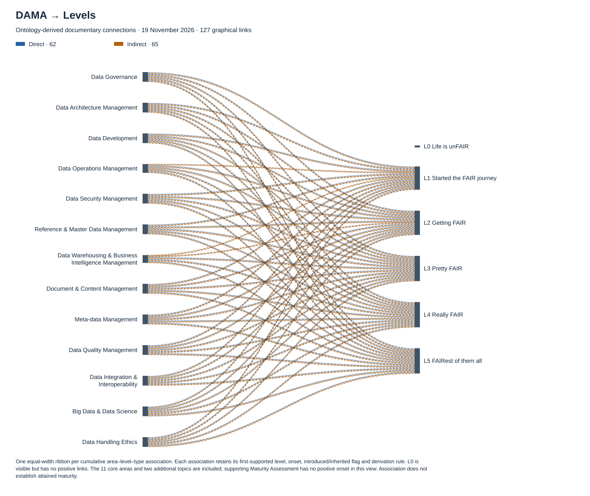

At which levels are DAMA area/type associations introduced or inherited, and which onset judgement and derivation rule explain them?
One equal-width ribbon per cumulative area–level–type association. Each association retains its first-supported level, onset, introduced/inherited flag and derivation rule. L0 is visible but has no positive links. The 11 core areas and two additional topics are included; supporting Maturity Assessment has no positive onset in this view. Association does not establish attained maturity.

Interactive diagram · Offline interaction · PNG · SPARQL · Extracted rows